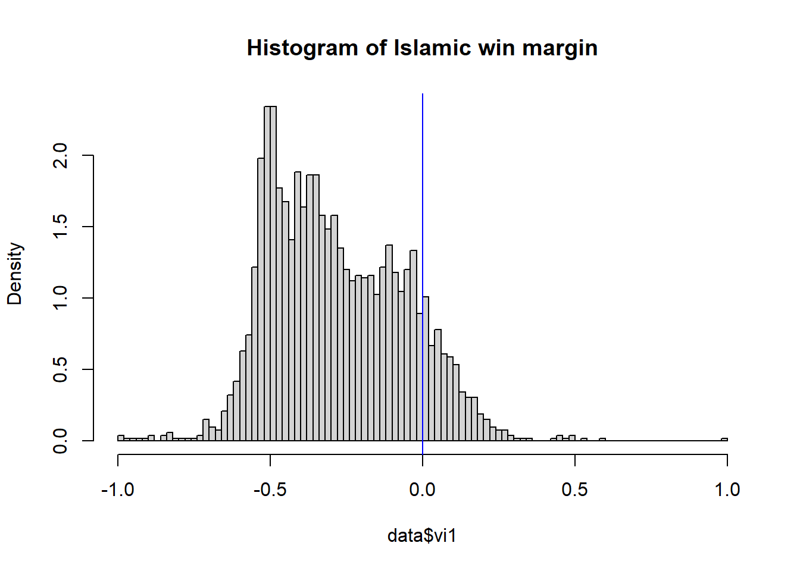
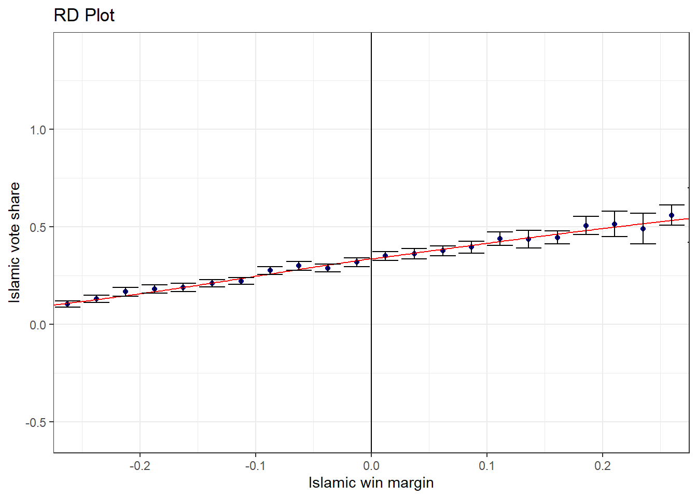
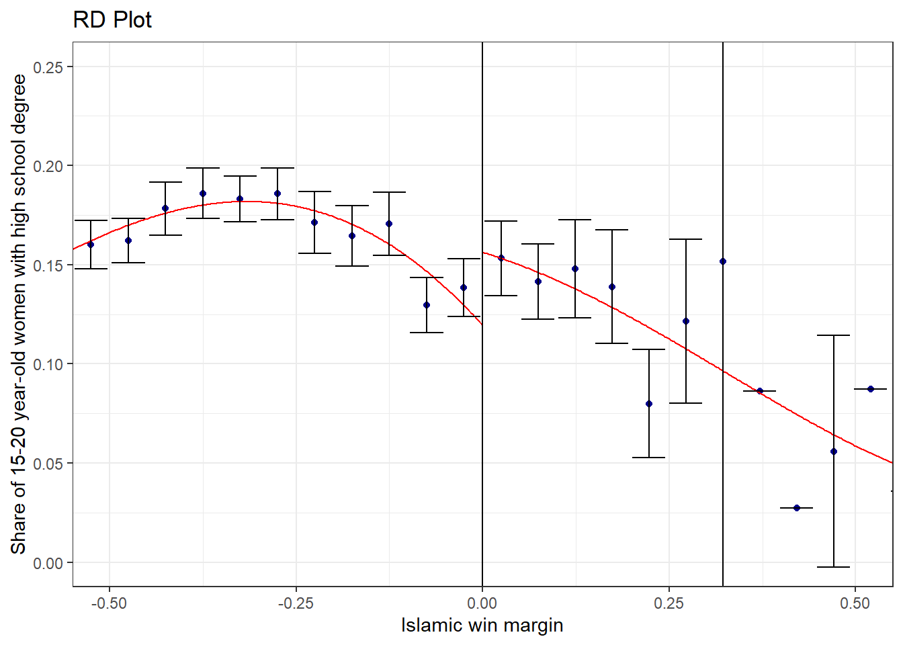
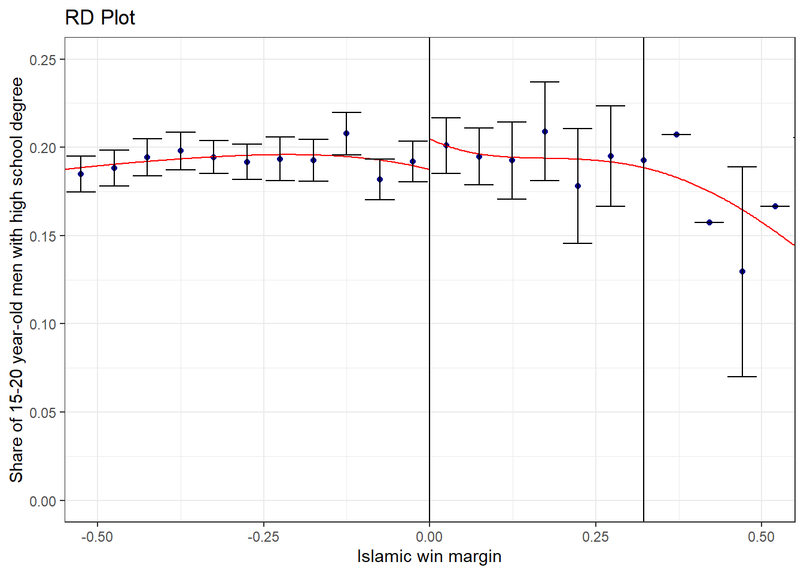
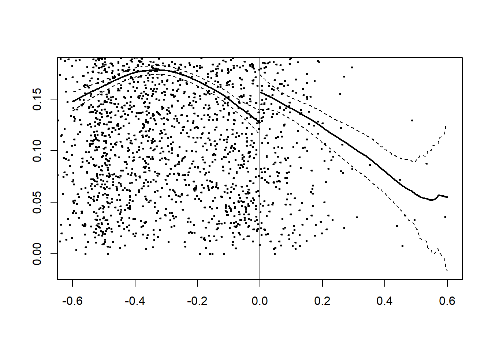
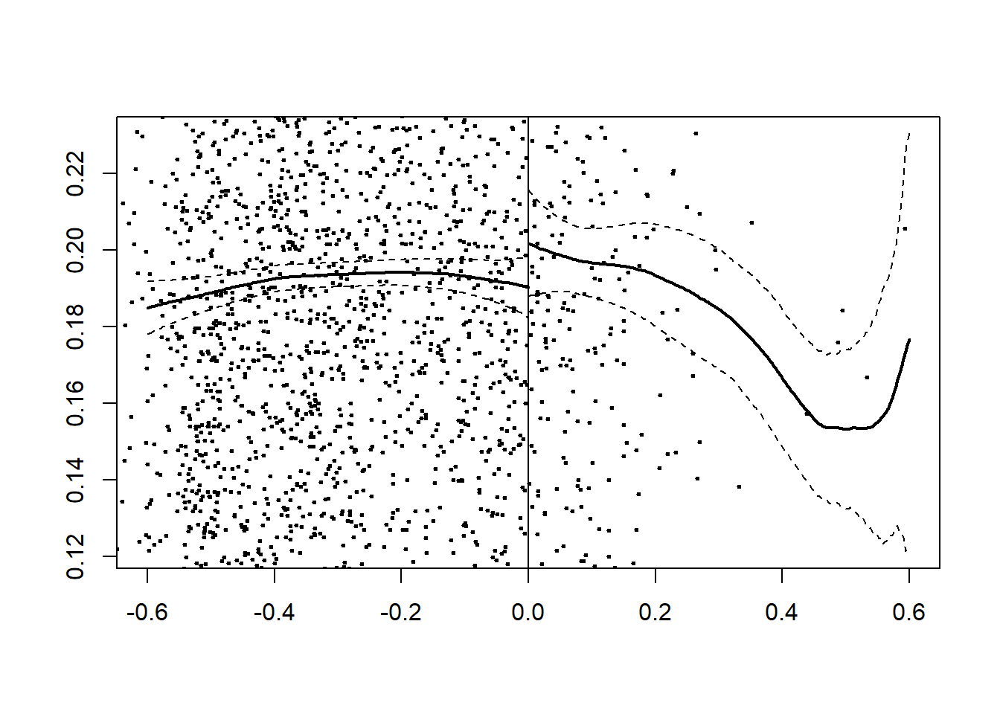

RD is based on the seemingly paradoxical idea that rigid rules create valuable experiments.
There are two distinct features of RDD. When \(a\) is our running variable, first, treatment status is deterministic of \(a\) and second, Treatment status is a discontinuous function of \(a\).
There are two types of RDD: First, Sharp RDD - Treatment cleanly switches on or off once running variable passes threshold. Second, Fuzzy RDD - Probability or intensity of treatment jumps at a cutoff.
Several countries have experienced Islamic political parties coming to power through democratic elections. This paper examines whether democratically elected Islamic polticians lead to worsened women’s rights.
This study implements RDD to answer this question using data from Turkey. Short answer is No! Islamic rule increases female secular high school education.
Turkey was founded as a secular republic but the influence of Islam in politics has increased substantially over the years. Secular education was viewed as a fundamental step toward modernization. Secular education includes mixed-sex education and banning of wearing religious symbols in school e.g. headscarf for women
In 1994, the pro-Islamic Refah Party became the second largest party in terms of votes. This brought about an unprecendented representation of Islamic political party and education facilities tailored to religious conservatives
Comparing between municipalities with an Islamic or secular mayor is not sufficient since assignment of mayor type is non-random. For example, municipalities more likely to elect an Islamic mayor may have some unobserved characteristics that also influence female enrollment.
RDD can help. Assignment of treatment (i.e. mayor type) is determined solely on the basis of a cutoff score on an observed running variable (i.e. win margin for the Islamic party relative to the largest non-Islamic party). In a narrow range, treatment is assigned almost randomly.
This study combines 1994 election data and 2000 census data at municipality level. Using RDD, it compares education outcomes where an Islamic mayor barely won or lost the election.
\[ y_i = \alpha + \beta m_i + f(x_i)+\epsilon_i, \] where \(m_i = 1\{x_i\geq c\}\).
It also conducts RD validity checks: whether density of running variable is continuous at discontinuity and whether control variables jump at the cutoff.
Having an Islamic mayor increases female enrollment by 3 percentage points. Effects for men are smaller and imprecise. This result contradicts a commonly-held belief that religious state leads to worsened women’s rights.
In religiously conservative communities, the headscarf ban, mixed-sex classes, and a secular curriculum create barriers to enroll in school for religious women. Islamic parties overcome these barriers by allowing headscarfs and creating facilities more amenable to religious conservatives.
Visit https://erikmeyersson.com/research/ \(\rightarrow\) Publications \(\rightarrow\) “Islamic Rule and the Empowerment of the Poor and Pious” \(\rightarrow\) STATA replication files and load regdata0.dta to R working environment.
library(haven) #import dta data
library(tidyverse)
data <- read_dta("regdata0.dta") %>%
select(hischshr1520f, hischshr1520m,
i94, vi1, vshr_islam1994, partycount, lpop1994,
ageshr19, ageshr60, sexr, shhs,
merkezi, merkezp,buyuk,subbuyuk,
starts_with("pd_")) %>%
na.omit() #2629 observationsols <- lm(data = data,
hischshr1520f~vi1)
coefficients(summary(ols))[,1:3]## Estimate Std. Error t value
## (Intercept) 0.15302526 0.003015656 50.743599
## vi1 -0.03565611 0.008426467 -4.231442Estimation with OLS yields negative estimates, meaning that globally, Islamic rule lowers female high school enrollment.
However, note that mayor type is not exogenously determined. We can improve this using RDD.
First check whether there is positive density around cutoff.
hist(data$vi1, 100, main = "Histogram of Islamic win margin",
probability = TRUE)
abline(v=0, col = "blue")
Next, check whether there is a jump in control variables.
library(rdrobust)
rdplot(data$vshr_islam1994, data$vi1,
ci = 95, # confidence interval
nbins = c(40,40), #number of dots on each side
binselect = "es", #bins are evenly spaced
x.lim = c(-0.25, 0.25),
y.label = "Islamic vote share",
x.label = "Islamic win margin")
Repeat the exercise for all covariates.
control <- list(data$vshr_islam1994, data$ageshr19,
data$sexr, data$partycount,
data$ageshr60, data$lpop1994,
data$merkezi, data$shhs)
varname <- c("Islamic vote share","Age 19-","Gender",
"Number of parties","Age 16+","Log population",
"District Center","Household size")
for (i in 1:length(control)) {
rdplot(control[[i]], data$vi1,
ci = 95, # confidence interval
nbins = c(40,40), #number of dots on each side
binselect = "es", #bins are evenly spaced
x.lim = c(-0.25, 0.25),
y.label = varname[i], x.label = "Islamic win margin")
}rdplot(data$hischshr1520f, data$vi1,
ci = 95,nbins = c(20,20),binselect = "es",
y.lim = c(0,0.25),x.lim = c(-0.5, 0.5),
y.label = "Share of 15-20 year-old women with high school degree",
x.label = "Islamic win margin")
rdplot(data$hischshr1520m, data$vi1, ci = 95,nbins = c(20,20),
binselect = "es", y.lim = c(0,0.25),x.lim = c(-0.5, 0.5),
y.label = "Share of 15-20 year-old men with high school degree",
x.label = "Islamic win margin")
We need to choose how many observations to include in the regression. Optimal bandwidth used in this study is the one calculated from Imbens and Kalyanaraman (2012) algorithm.
library(rdd)
band <- IKbandwidth(data$vi1, data$hischshr1520f)
band## [1] 0.2397612rd_est <- RDestimate(hischshr1520f~vi1,cutpoint=0,bw=band, data=data)
summary(rd_est)##
## Call:
## RDestimate(formula = hischshr1520f ~ vi1, data = data, cutpoint = 0,
## bw = band)
##
## Type:
## sharp
##
## Estimates:
## Bandwidth Observations Estimate Std. Error z value Pr(>|z|)
## LATE 0.2398 1020 0.02963 0.01241 2.388 0.01696 *
## Half-BW 0.1199 589 0.02502 0.01647 1.519 0.12869
## Double-BW 0.4795 2049 0.02279 0.01009 2.258 0.02397 *
## ---
## Signif. codes: 0 '***' 0.001 '**' 0.01 '*' 0.05 '.' 0.1 ' ' 1
##
## F-statistics:
## F Num. DoF Denom. DoF p
## LATE 4.988 3 1016 3.876e-03
## Half-BW 1.704 3 585 3.303e-01
## Double-BW 25.744 3 2045 4.441e-16LATE corresponds to the estimation with optimal bandwidth. 1020 observations are used.
Half-BW (Double-BW) is when narrower (wider) bandwidth is used, resulting in fewer (more) observations.
An Islamic mayor leads to approximately 3 percentage points increase in women’s highschool enrollment. The effect is statistically significant.
What we just estimated is Sharp RDD. For Fuzzy RDD, see the documentation of ?RDestimate.
Next, consider RD estimate for males. Don’t forget to obtain a new optimal bandwidth.
##
## Call:
## RDestimate(formula = hischshr1520m ~ vi1, data = data, cutpoint = 0,
## bw = band_m)
##
## Type:
## sharp
##
## Estimates:
## Bandwidth Observations Estimate Std. Error z value Pr(>|z|)
## LATE 0.3230 1342 0.011561 0.009089 1.272 0.2034
## Half-BW 0.1615 747 0.019136 0.011913 1.606 0.1082
## Double-BW 0.6460 2584 0.008664 0.007469 1.160 0.2460
## ---
## Signif. codes: 0 '***' 0.001 '**' 0.01 '*' 0.05 '.' 0.1 ' ' 1
##
## F-statistics:
## F Num. DoF Denom. DoF p
## LATE 0.8750 3 1338 0.9068
## Half-BW 1.4627 3 743 0.4469
## Double-BW 0.9692 3 2580 0.8126The effect is not statistically significant. This means Islamic rule has significant positive impact only on female education attainment.
plot(rd_est, range=c(-0.6,0.6))
abline(v=0) 
plot(rd_estm, range=c(-0.6,0.6))
abline(v=0) 
provinceFE <- data %>%
select(starts_with("pd")) %>%
select(-pd_1) %>%
as.matrix()
rd_est_control <- RDestimate(hischshr1520f~vi1 |
vshr_islam1994 + partycount +
ageshr19 + ageshr60 + sexr + lpop1994 +
merkezi + merkezp + buyuk + subbuyuk +
provinceFE,
cutpoint=0,
bw=band, data=data)summary(rd_est_control)##
## Call:
## RDestimate(formula = hischshr1520f ~ vi1 | vshr_islam1994 + partycount +
## ageshr19 + ageshr60 + sexr + lpop1994 + merkezi + merkezp +
## buyuk + subbuyuk + provinceFE, data = data, cutpoint = 0,
## bw = band)
##
## Type:
## sharp
##
## Estimates:
## Bandwidth Observations Estimate Std. Error z value Pr(>|z|)
## LATE 0.2398 1020 0.02563 0.007843 3.267 0.0010853
## Half-BW 0.1199 589 0.02891 0.010793 2.679 0.0073932
## Double-BW 0.4795 2049 0.02334 0.006441 3.624 0.0002901
##
## LATE **
## Half-BW **
## Double-BW ***
## ---
## Signif. codes: 0 '***' 0.001 '**' 0.01 '*' 0.05 '.' 0.1 ' ' 1
##
## F-statistics:
## F Num. DoF Denom. DoF p
## LATE 18.13 92 927 0
## Half-BW 11.35 88 500 0
## Double-BW 32.57 93 1955 0